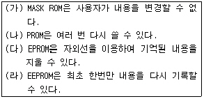
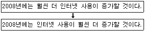
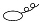
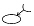
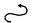

워드프로세서-2급(폐지) (2008-05-04 기출문제)
1과목: 워드프로세서 용어 및 기능
1. 다음 중 행두금칙 문자에 해당하는 것은?
- [
- ?
- <
- #
(정답률: 92%)

2. 다음 중 워드프로세서 용어의 설명으로 옳지 않은 것은?
- 행 호출(line call) : 특정 문단으로 커서를 빠르게 이동시켜주는 기능
- 페이지 호출(page call) : 특정 쪽으로 커서를 빠르게 이동시켜주는 기능
- 피치(pitch) : 1인치당 입력되는 문자의 수
- 아이콘(icon) : GUI 환경에서 화면상에 표시되는 작은 그림
(정답률: 59%)
3. 다음 중 모니터 상에 나타난 내용을 프린터 인쇄용지에 출력하는 것을 무엇이라고 하는가?
- 하드카피(Hard Copy)
- 소프트카피(Soft Copy)
- 라인피드(Line Feed)
- 폼피드(Form Feed)
(정답률: 76%)
4. 다음 중 워드프로세서의 치환(찾아 바꾸기) 기능으로 할 수 없는 것은?
- 한글을 특수문자로 바꾸기
- 표를 문자열로 바꾸기
- 영문 대소문자를 구별하여 바꾸기
- 한자를 영문자로 바꾸기
(정답률: 79%)
5. 다음 중 복사(Copy)와 오려두기(Cut)에 관한 설명으로 옳지 않은 것은?
- 복사와 오려두기 모두 버퍼나 클립보드를 사용한다.
- 복사와 오려두기를 하면 지정된 영역은 변함이 없다.
- 지정된 영역의 내용을 오려두기 한 후 붙이기(Paste) 기능을 사용하여 다른 곳에 이동시킬 수 있다.
- 복사는 문서의 분량을 증가시키는 반면 이동은 일반적으로 문서의 분량이 증가되지 않는다.
(정답률: 66%)
6. 다음 중 문서의 인쇄에 대하여 설명한 것으로 옳지 않은 것은?
- 문서의 특정 쪽을 지정하여 인쇄할 수 있다.
- 여러 개의 프린터가 설치된 경우 특정 프린터를 선택하여 인쇄할 수 있다.
- 인쇄 대화상자에서 문단의 정렬 방식을 변경할 수 있다.
- 인쇄 부수를 지정하여 한 번의 명령으로 동일한 문서를 여러 번 인쇄할 수 있다.
(정답률: 72%)
7. 다음 중 문서작성의 형식구분이 옳지 않은 것은?
- 법규문서-조문형식
- 지시-조문형식
- 일일명령-시행문형식
- 예규-조문형식
(정답률: 57%)
8. 다음 중 암호(Password)의 설정과 가장 관련이 있는 기능은?
- 편집기능
- 표시기능
- 입력기능
- 저장기능
(정답률: 74%)
9. 다음 중 머리말에 관한 설명으로 옳지 않은 것은?
- 페이지마다 반복되는 내용을 표시할 수 있다.
- 홀수 및 짝수로 나누어 처리할 수 있다.
- 미주와 같은 의미이다.
- 교재나 보고서 작성 시 많이 사용된다.
(정답률: 78%)
10. 다음 중 정렬(Sort)에 관한 설명으로 옳지 않은 것은?
- 오름차순 및 내림차순 정렬이 있다.
- 워드프로세서의 정렬(Align)과 같은 기능이다.
- 숫자가 큰 것에서 작은 것 순서대로 정렬되는 것을 내림차순이라고 한다.
- 소트를 이용하여 자료를 성적의 순위나 회원 나이 순서로 쉽게 분류할 수 있다.
(정답률: 67%)
11. 다음 중 결재권자가 휴가, 출장 기타의 사유로 결재할 수 없을 때에 그 직무를 대리하는 자가 결재하는 것을 무엇이라 하는가?
- 위임 전결
- 후결
- 대결
- 후열
(정답률: 88%)
12. 다음 중 워드프로세서에서 [Enter] 키와 가장 관련이 없는 것은?
- 커서의 이동
- 강제 개행(Hardware Return)
- 새로운 문단의 시작
- 눈금자(Ruler)
(정답률: 85%)
13. 다음 중 인쇄 장치의 인쇄 속도 단위는 어느 것인가?
- MIPS
- PPM
- Mbyte
- BPI
(정답률: 82%)
14. 다음 중 사무문서 작성 시 6하 원칙(5WH)의 사용과 관계있는 사무 관리의 원칙은?
- 정확성
- 신속성
- 용이성
- 경제성
(정답률: 75%)
15. 다음 중 출력할 자료를 일정한 공간에 저장해 두었다가 프린터가 출력 가능한 시기에 출력할 수 있도록 해 주는 기능은?
- 홈베이스(Home Base)
- 워드 랩(Word Wrap)
- 스풀링(Spooling)
- 피치(Pitch) 조절
(정답률: 80%)
16. 다음 중 아래 보기에서 옳은 항목만을 모두 나열한 것은?

- ㈎, ㈏, ㈐, ㈑
- ㈎, ㈏
- ㈎, ㈐
- ㈎, ㈏, ㈐
(정답률: 73%)
17. 다음 중 파일의 확장자와 형식이 잘못 연결된 것은?
- TXT-텍스트 파일
- BAK-압축 저장 파일
- HTM-인터넷 문서 파일
- DOC-워드 문서 파일
(정답률: 71%)
18. 다음 중 ‘다른 이름으로 저장’ 기능으로 할 수 있는 작업이 아닌 것은?
- 문서의 파일 이름을 변경할 수 있다.
- 문서의 저장 위치를 변경할 수 있다.
- 문서의 저장 형식을 변경할 수 있다.
- 문서의 출력 속성을 변경할 수 있다.
(정답률: 79%)
19. 다음과 같이 문장을 변경할 때 사용되는 교정부호는?



(정답률: 89%)
20. 다음 중 문장에서 줄 사이의 간격을 띄우라는 교정부호는?

(정답률: 78%)
2과목: PC 운영 체제
21. 한글 Windows XP에서 인터넷을 사용할 때 문자로 되어 있는 도메인 네임을 숫자로 구성된 IP 주소로 변경해 주는 시스템은?
- 기본 게이트웨이
- 기본 설정 DNS 서버
- 서브넷 마스크
- IP 주소
(정답률: 67%)
22. 다음 중 한글 Windows XP의 폴더 창에서 파일을 삭제하는 방법으로 가장 옳지 않은 것은?
- 삭제할 파일을 선택하고 마우스 오른쪽 버튼을 클릭하여 나타나는 메뉴에서 [잘라내기]를 선택한다.
- 삭제할 파일을 선택하고 해당하는 폴더 창의 [파일] 메뉴에서 [삭제]를 선택한다.
- 삭제할 파일을 선택하여 바탕화면에 있는 휴지통 아이콘위로 끌어다 놓는다.
- 삭제할 파일을 선택하고 키보드의 [Delete] 키를 누른다.
(정답률: 75%)
23. 한글 Windows XP의 [그림판]프로그램에서 마우스의 오른쪽 버튼을 누른 상태로 연필과 붓을 사용하여 그림을 그린 경우에 대한 설명으로 옳은 것은?
- 연필과 붓 모두가 전경색으로 그려진다.
- 연필은 전경색, 붓은 배경색으로 그려진다.
- 연필은 배경색, 붓은 전경색으로 그려진다.
- 연필과 붓 모두가 배경색으로 그려진다.
(정답률: 64%)
24. 한글 Windows XP에서 부팅할 때 표시되는 시작 옵션 중에서 모니터, Microsoft 마우스 드라이버 및 Windows를 시작하는데 필요한 최소한의 장치 드라이버 등 기본 설정만 사용하고 네트워크 연결을 사용하지 않는 선택 항목은?
- 안전 모드
- 부팅 로깅 사용
- VGA 모드 사용
- 디버그 모드
(정답률: 81%)
25. 한글 Windows XP의 [제어판]에 있는 [폴더 옵션]을 이용하여 할 수 없는 작업은?
- 같은 창에서 폴더 열기를 설정할 수 있다.
- 폴더 창에 숨김 파일이나 모양을 변경할 수 있다.
- 폴더 창에 표시되는 글꼴의 모양을 변경할 수 있다.
- 지정하는 파일 형식에 대하여 연결 프로그램을 변경할 수 있다.
(정답률: 61%)
26. 한글 Windows XP에서 현재 사용 중인 [명령 프롬프트] 창을 종료하기 위한 명령어는?
- bye
- quite
- exit
- return
(정답률: 84%)
27. 한글 Windows XP에서 [탐색기]를 실행하는 방법으로 옳지 않은 것은?
- [윈도 로고] + [E] 키를 누른다.
- [Ctrl] 키를 누른 상태로 [내 컴퓨터] 아이콘을 더블 클릭한다.
- [내 컴퓨터] 아이콘의 바로 가기 메뉴에서 [탐색]을 클릭한다.
- 시작 메뉴의 [실행]을 선택한 후에 ‘explorer'를 입력하고 [확인]을 클릭한다.
(정답률: 52%)
28. 한글 Windows XP에서 바로 가기 메뉴에 관한 설명으로 옳지 않은 것은?
- 선택하는 항목에 따라서 바로 가기 메뉴를 구성하는 내용은 달라질 수 있다.
- 해당하는 항목을 선택한 후에 [Shift] + [F10] 키를 누르면 바로 가기 메뉴가 나타난다.
- 해당하는 항목을 선택한 후에 마우스 오른쪽 단추를 클릭하면 바로 가기 메뉴가 나타난다.
- 바로 가기 메뉴의 표시는 바로 가기 아이콘에서만 가능하다.
(정답률: 64%)
29. 한글 Windows XP에서 프린터 설정에 관한 설명으로 옳지 않은 것은?
- 여러 대의 프린터를 설치할 수 있다.
- 1대의 특정한 프린터를 기본 프린터로 설정할 수 있다.
- 네트워크를 이용하여 공유를 허용한 다른 컴퓨터에 연결된 프린터를 내 컴퓨터의 연결된 프린터처럼 사용할 수 있도록 설정할 수 있다.
- 프린터의 인쇄 관리자 창에서 인쇄 작업 중인 문서를 더블 클릭하면 문서의 실제 내용을 볼 수 있다.
(정답률: 62%)
30. 한글 Windows XP에서 폴더 창에 표시되는 아이콘 정렬 순서의 방식이 아닌 것은?
- 이름
- 크기
- 사용자
- 수정한 날짜
(정답률: 78%)
31. 한글 Windows XP의 [제어판]에 있는 [마우스]의 등록 정보 창에서 설정할 수 없는 것은?
- 키보드의 숫자 키패드를 사용한 마우스 포인터의 이동을 설정할 수 있다.
- 마우스 드라이버를 업데이트할 수 있다.
- 마우스의 휠을 한번 돌릴 때 스크롤할 양을 변경할 수 있다.
- [Ctrl] 키를 누르면 포인터 위치가 표시되도록 설정할 수 있다.
(정답률: 56%)
32. 다음 중 한글 Windows XP에서 [탐색기] 창의 하단에 상태표시줄이 표시된 경우에 확인할 수 없는 정보는?
- 드라이브, 폴더의 이름
- 폴더에 있는 하위 폴더와 파일의 수
- 폴더에 있는 파일의 총 크기
- 사용할 수 있는 디스크 공간
(정답률: 50%)
33. 한글 Windows XP의 폴더 창에서 임의의 파일을 실수로 삭제하였을 때 삭제한 파일을 복구하기 위한 방법으로 옳지 않은 것은?
- 삭제한 파일이 [휴지통]에 있는 경우에 해당 파일의 바로 가기 메뉴에서 [복원]을 선택한다.
- 폴더 창의 [편집] 메뉴에서 [삭제 취소]를 선택한다.
- 폴더 창의 바로 가기 메뉴에서 [붙여 넣기]를 선택한다.
- [Ctrl] + [Z] 키를 누른다.
(정답률: 66%)
34. 한글 Windows XP에서 설치된 디스크 드라이브를 포맷하려고 할 때 [포맷]창에서 확인하거나 설정할 수 있는 항목이 아닌 것은?
- 용량
- 파일 시스템
- 볼륨 레이블
- 공유
(정답률: 59%)
35. 다음 중 한글 Windows XP에서 인터넷을 사용하기 위하여 해당 컴퓨터의 IP 주소를 동적으로 구성하는 방법은?
- DHCP
- POP
- FTP
- SMTP
(정답률: 70%)
36. 한글 Windows XP의 [제어판]에 있는 [디스플레이 등록 정보]창에서 변경할 수 있는 사항으로 옳지 않은 것은?
- 바탕 화면에 있는 배경 무늬를 변경할 수 있다.
- 테마를 변경하여 배경 화면, 백그라운드 소리 등을 한꺼번에 변경할 수 있다.
- 모니터를 보호하는 화면 보호 프로그램을 지정할 수 있다.
- 커서가 깜박이는 속도와 너비를 슬라이더를 이동하여 조정할 수 있다.
(정답률: 65%)
37. 다음 중 한글 Windows XP에서 [내 컴퓨터] 창에 있는 [로컬 디스크 (C)] 드라이브의 용량을 확인하는 방법으로 옳지 않은 것은?
- 마우스 포인터를 [로컬 디스크 C:] 위에 올려놓으면 풍선 도움말로 디스크의 전체 크기와 사용 가능한 공간이 표시된다.
- 마우스 오른쪽 단추로 [로컬 디스크 C:]를 한번 클릭하면 [내 컴퓨터] 창 왼쪽 [자세히] 부분에 디스크의 전체 크기와 사용 가능한 공간이 표시된다.
- 마우스 왼쪽 단추로 [로컬 디스크 C:]를 더블 클릭하면 전체 크기와 사용 가능한 공간이 표시되는 대화상자가 나타난다.
- [로컬 디스크 C:]의 바로 가기 메뉴에서 [속성] 항목을 선택하면 디스크의 전체 크기와 사용 가능한 공간이 표시된다.
(정답률: 63%)
38. 한글 Windows XP에서 [시스템 도구]에 있는 프로그램을 사용하는 목적으로 가장 옳지 않은 것은?
- 하드디스크의 오류 검사를 할 수 있다.
- 불필요한 파일을 삭제하여 하드디스크의 공간을 더 확보할 수 있다.
- 하드디스크의 단편화를 제거하여 프로그램의 수행 속도를 향상시킬 수 있다.
- 디스크를 초기화하기 위하여 포맷할 수 있다.
(정답률: 50%)
39. 한글 Windows XP에서 [보조프로그램]의 [엔터테인먼트]에 있는 [Windows Media Player] 프로그램에 관한 설명으로 옳지 않은 것은?
- 오디오 및 동영상 파일의 재생이 가능하다.
- 재생 목록 만들기와 편집이 가능하다.
- 사운드 파일의 편집이 가능하다.
- 다양한 스킨을 다운받거나, 선택하여 적용할 수 있다.
(정답률: 48%)
40. 다음 중 한글 Windows XP에서 [제한된 계정]의 사용자가 할 수 있는 기능이 아닌 것은?
- 사용자 자신의 암호를 변경할 수 있다.
- 마우스 포인터의 모양을 변경할 수 있다.
- 프린터를 새로 추가할 수 있다.
- 사용자의 사진으로 자신만의 바탕 화면을 설정할 수 있다.
(정답률: 54%)
3과목: PC 기본 상식
41. 다음 중 개인용 컴퓨터(PC)에서 CPU가 수행하는 기능과 가장 거리가 먼 것은?
- 명령어 인출
- 명령어 해독
- 명령어 저장
- 데이터 처리
(정답률: 49%)
42. 다음 중 근거리 통신망(LAN)의 특징으로 가장 옳지 않은 것은?
- 고속 통신과 높은 신뢰도
- 유사한 업무를 수행하는 기관이나 회사의 공동으로 통신망 구성
- 다양한 통신 장치와의 연결성
- 연결 방식으로는 스타형, 버스형, 링형등이 있다.
(정답률: 48%)
43. 다음 중 네트워크를 구성하는데 필요한 장비들에 대한 설명으로 옳지 않은 것은?
- 브리지(Bridge)-받은 신호를 증폭시켜 먼 거리까지 전송한다.
- 게이트웨이(Gateway)-두 개의 다른 네트워크를 상호 접속한다.
- 라우터(Router)-네트워크에 메시지를 보낼 때 최적의 경로를 결정한다.
- 허브(Hub)-서로 다른 컴퓨터를 연결하며 회선을 통합적으로 관리한다.
(정답률: 59%)
44. 다음 중 해킹(Hacking) 수법의 일종으로 네트워크 주변을 지나다니는 패킷(Packet)을 엿보면서 사용자 계정이나 비밀 번호, 주민등록번호 등을 몰래 알아내는 행위를 무엇이라 하는가?
- 스푸핑(Spoofing)
- 스니핑(Sniffing)
- Dos(Denial of Service)
- 백 도어(Back Door)
(정답률: 71%)
45. 다음 중 문서 작성을 도와주는 워드프로세서는 어느 프로그램 영역에 속하는가?
- 범용 응용 소프트웨어
- 유틸리티 소프트웨어
- 시스템 소프트웨어
- 특수 목적용 소프트웨어
(정답률: 53%)
46. 다음 중 미사일이나 항공기의 궤도 추적 및 생산 설비의 자동공정 제어 등과 같은 특수한 목적으로 사용되는 컴퓨터를 무엇이라 하는가?
- 슈퍼 컴퓨터
- 범용 컴퓨터
- 서버 시스템
- 전용 컴퓨터
(정답률: 52%)
47. 다음 중 광대역 종합정보통신망(B-ISDN)의 특징으로 옳지 않은 것은?
- 다중 매체 통신이 가능하다.
- 제공되는 통신 속도에 따라 항등비트율과 가변 비트율 서비스를 제공한다.
- 종합정보통신망(ISDN)보다 영상 전송시 대역폭이 좁다.
- 비동기 전송모드(ATM) 기술을 적용하여 고속화가 가능하다.
(정답률: 68%)
48. 다음 중 어셈블리(Assembly) 언어에 대한 설명으로 옳지 않은 것은?
- 기계어에 프로그래머가 이해하기 쉽도록 연상기호(Mnemonic)를 부여한 언어이다.
- 일반 프로그래머보다는 시스템 프로그래머가 주로 사용하는 언어이다.
- 고급 언어보다 수행속도 면에서 빠르다.
- 고급 언어보다 프로그래밍하기가 쉽다.
(정답률: 51%)
49. 다음 중 바이러스 예방조치 방법으로 가장 적절하지 않은 것은?
- 시스템 디스켓은 쓰기 방지를 하여 보관해 둔다.
- 인터넷을 통해서 다운받은 프로그램은 항상 바이러스 감염 여부를 확인한 후 사용한다.
- 바이러스 예방 프로그램과 치료 프로그램을 항상 최신 버전으로 준비해 둔다.
- 다른 사람이 자신의 컴퓨터를 사용하지 못하도록 사용하지 않을 때는 반드시 컴퓨터의 전원을 꺼둔다.
(정답률: 68%)
50. 다음 중 컴퓨터 바이러스에 감염된 것으로 판단하기 어려운 것은?
- 갑자기 컴퓨터의 속도가 느려졌을 경우
- 파일이 삭제된 경우
- 파일의 크기가 변경된 경우
- 컴퓨터에 전원이 들어오지 않을 경우
(정답률: 77%)
51. 다음 중 정보통신 구성 시스템 간에 데이터 교환을 위해 존재하는 미리 정의된 상호 약속 또는 규약을 무엇이라고 하는가?
- 프로토콜
- 망 관리
- 교환기
- 통신 방식
(정답률: 87%)
52. 다음 중 얇은 원판에 강한 레이저로 변화를 주어 데이터를 기록하고 약한 레이저를 사용하여 반사되는 반사율로 데이터를 읽어내는 방식의 기억매체를 무엇이라 하는가?
- ZIP 디스크
- 광디스크
- 플래시 메모리
- 스마트 미디어 카드
(정답률: 77%)
53. 다음 중 중앙처리장치가 데이터를 처리하는 동안 사용할 값이나 중간 결과를 일시적으로 저장해 두는 중앙처리장치내의 고속기억장치를 무엇이라 하는가?
- 레지스터
- BIOS
- 인터럽트
- 캐쉬
(정답률: 72%)
54. 다음 중 텍스트뿐만 아니라 이미지, 그래픽, 사운드, 동영상 등을 포함한 정보가 링크로 서로 연결된 것을 무엇이라고 하는가?
- 플러그인
- 웹 브라우저
- 스트리밍
- 하이퍼미디어
(정답률: 78%)
55. 비트맵 파일은 점(pixel)들의 집합으로 이미지를 구성하여 고해상도를 표현하는데 적합하고 처리속도가 빠르다. 다음 중 비트맵 그래픽 파일 형식이 아닌 것은?
- BMP
- CDR
- GIF
- TIFF
(정답률: 51%)
56. 다음 중 컴퓨터의 처리속도를 표시하는 방법으로 널리 쓰이고 있는 단위는?
- MIPS
- MIIS
- MPPS
- MMPS
(정답률: 82%)
57. 다음 중 소스코드를 무료로 공개하여 단일 운영체제의 독점이 아닌 다수를 위한 공개 원칙하에 만들어진 운영체제는 어느 것인가?
- OS/2
- Windows XP
- Linux
- UNIX
(정답률: 73%)
58. 다음 중 멀티미디어에 대한 설명으로 옳지 않은 것은?
- 멀티와 미디어의 합성어로 다중매체라는 뜻을 가지고 있다.
- 텍스트, 오디오, 비디오 등 여러 영상매체들의 통합 형태로 정보를 표현한다.
- 다양한 형태의 데이터를 컴퓨터로 처리하기 위해 아날로그 정보를 제공한다.
- 사용자와 상호작용이 가능한 대화기능을 포함한다.
(정답률: 64%)
59. 다음 중 원격 간에 서로 영상을 보면서 회의를 가능하게 하는 시스템은 어느 것인가?
- VOD(Video On Demand)
- VR(Virtual Reality)
- VCS(Video Conferencing System)
- CAI(Computer Aided Instruction)
(정답률: 70%)
60. 정보통신의 발달로 인해서 해킹을 통한 컴퓨터 범죄가 급증하고 있다. 다음 중 해킹을 방지하기 위한 대책으로 옳지 않은 것은?
- 비밀 번호를 수시로 변경한다.
- 해킹 방지를 위한 보안 관련 프로그램을 보급한다.
- 사용자에 대한 보안 교육을 정기적으로 실시한다.
- 해킹으로부터 보호하기 위해 네트워크 서비스를 중지한다.
(정답률: 87%)
"[", "<", "#": HTML 태그에서 사용되는 기호이며, 특정한 의미를 가지고 있습니다.
"?"는 파일 이름에 사용할 수 없는 특수 문자 중 하나로, 파일 시스템에서 예약어로 사용되기 때문입니다. 따라서 파일 이름에 "?"를 사용하면 오류가 발생할 수 있습니다.